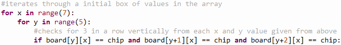
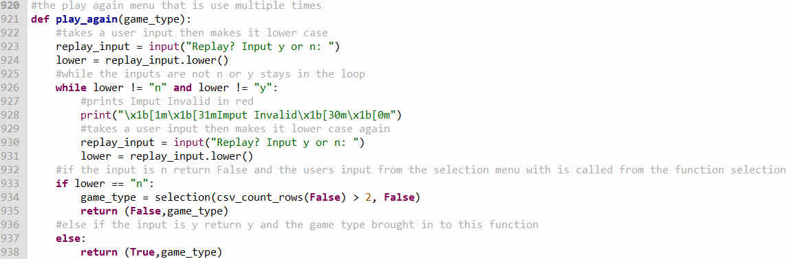

I had the plan for my project made by the 12th of December and started coding on the 13th. I made the menus and number validation on this day and put them in a file for the future parts to slot into. On the 15th I started the multiplayer game creation and had the numpy array, gravity, column overflow prevention along with making numbers 1 and 2 represent the yellow and red chip. This game was a playable board but did not inform the players when there was a win. This was used later as the backend of the system and I finished this on the 20th of December. On the 5th of January I started to add win and draw checkers. This took until the 12th. On the 16thJanuary I added the front end, I modified code from stack overflow and for the board and use coloured ascii characters for the chips. From the 17th of January to the 26th I made an intelligent opponent that would make reasonable moves to try to beat the user. This intelligent opponent was later integrated into the single player between the 20th of February and 21st. On the 23rd of February I began adding the simulations so that the computer would play itself many times to collect data for the CSV file. Between the 28th of February and the 7th of March, I built the data collection feature which collected the data sets from the games and put them in a CSV file. On the 13th of March I finished adding the testing hypotheses and changing parameters mode and started onto the graphs on the 14th of March. I finished the graphs and did some finishing touches such as the time estimations for the simulator.
A problem I encountered when making the intelligent opponent I was getting out of the error: IndexError: index 6 is out of bounds for axis 0 with size 6 from this code:

I got this error due to the area I was requesting data from not existing. This is because at the end of the if statement y+2 would be 4+2 (when the y values is at its peak of 4). The numpy array is only 5 high and the if statement was asking for data in the 6th row of the array to fix this, I reduce my initial search area by changing the from for y in range(5): to for y in range(4): this stopped the error and solved my problem.
This is a piece of code i enjoyed making explained:

This function is used to check if the player wants to play again. It first starts out by asking the user to enter “y” or n representing yes and no respectively, it then makes the values it receives lower case. If the input is not “n” or “y” it will go into the loop and will print Input Invalid and ask the user until it gets a valid input. If the player picked “n” It will return False and the new game_type the user selected. If the player, however, picked “y” it will return True and the functions argument (game_type).